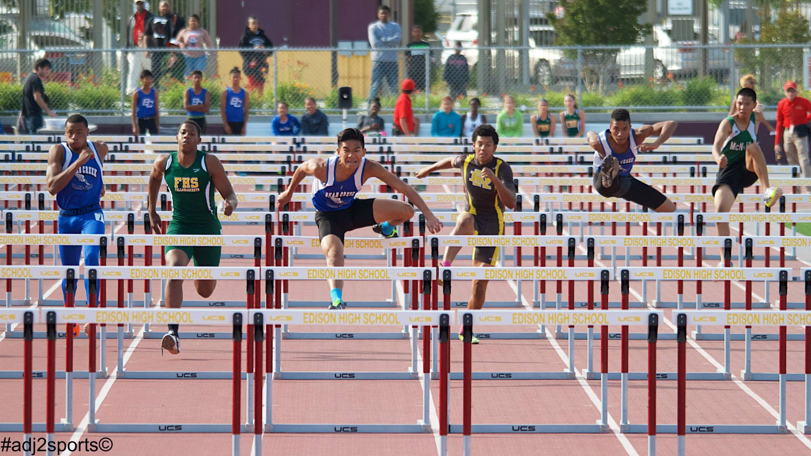
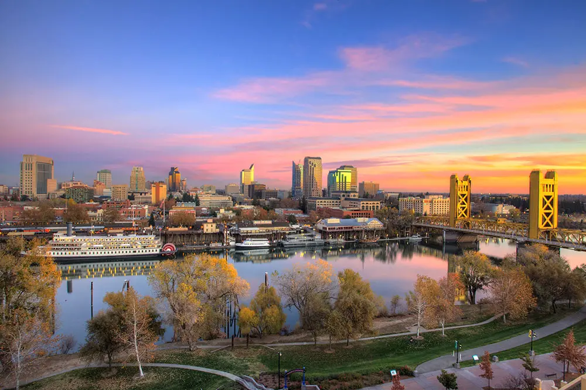

Intro
Who Am I
Hey there! My full name is Rydell Jordan Manto Donato. I'm 24 years old currently living in Sacramento, CA. A huge part of who I am derives from my past as an athlete and the journey post-athlete. The athlete life instilled core values that I live by every single day such as:
- Hard-work
- Determination
- Persistence
- Understanding
I'm a person who won't settle for a life where I'm not doing something I genuinely enjoy.
I use to believe that track and field was my future because it was what I enjoyed the most and made me the most happy. Due to an injury and some circumstances out of my control, I was faced with a tough decision where I ultimately let go of that one thing that I loved doing. The years that followed proved to be a challenge, but the values I carried with me helped me overcome all the mental, emotional, and physical hurdles. I learned to constantly seek to live by my core values in order to create a life I could look back at with no regret, knowing I did things I genuinly love.
Where Am I Located
This is a beautiful part of downtown Sacramento, CA.
